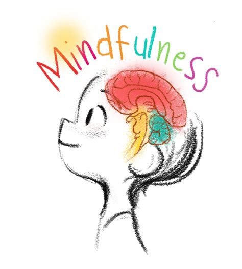

Welcome to Mindful Saturday! Today we’ll be exploring the benefits of mindfulness and how you can incorporate it into your daily routine.
Mindfulness is the practice of being present and fully engaged in the current moment without judgment. This means taking notice of your thoughts, emotions, and physical sensations without getting caught up in them. It’s a way of training your mind to be more aware and focused, which can reduce stress and increase well-being.
Here are some of the benefits of mindfulness:
So how can you incorporate mindfulness into your daily routine? Here are a few tips:
Remember, mindfulness is a practice that takes time and patience. Don’t get discouraged if you find your mind wandering during your practice. Simply acknowledge the thought and gently bring your attention to your breath or the present moment. With regular practice, you can experience the many benefits of mindfulness and improve your overall well-being.